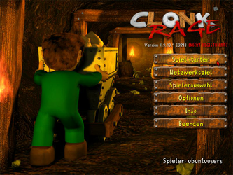
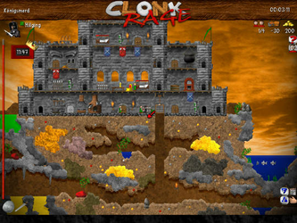
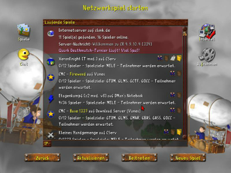
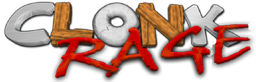

Clonk Rage
Dieser Artikel wurde für die folgenden Ubuntu-Versionen getestet:
Ubuntu 16.04 Xenial Xerus
Zum Verständnis dieses Artikels sind folgende Seiten hilfreich:
Clonk 
 ist ein unterhaltsames, actionreiches Taktik- und Geschicklichkeitsspiel. Es kann alleine gespielt werden, doch gerade im Mehrspieler-Modus mit zwei, drei oder mehr Spielern an einem Rechner, im lokalen Netzwerk oder im Internet zeigt das Spiel seine volle Stärke. Das Spiel läuft in Runden ab, in denen jeder Spieler in Echtzeit seine Clonks durch die Welt steuert, um sich entweder der Naturgewalten zu erwehren oder seinem Gegner den Garaus zu machen.
ist ein unterhaltsames, actionreiches Taktik- und Geschicklichkeitsspiel. Es kann alleine gespielt werden, doch gerade im Mehrspieler-Modus mit zwei, drei oder mehr Spielern an einem Rechner, im lokalen Netzwerk oder im Internet zeigt das Spiel seine volle Stärke. Das Spiel läuft in Runden ab, in denen jeder Spieler in Echtzeit seine Clonks durch die Welt steuert, um sich entweder der Naturgewalten zu erwehren oder seinem Gegner den Garaus zu machen.
Das originale Clonk stammt aus dem Jahre 1994 und nach unzähligen Versionen ist 2007 eine native Linux-Version mit dem Namen Clonk Rage veröffentlicht worden. In dem Artikel wird nur auf Clonk Rage eingegangen. Clonk ist Shareware und kann so vor dem Kauf erstmal mit geringem Funktionsumfang getestet werden.
Die Spielengine von Clonk Rage wurde unter einer freien Lizenz veröffentlicht. Auf Basis dieser Veröffentlichung startete die Clonk-Community 2010 mit der Entwicklung einer Open-Source Version des Spiels namens OpenClonk.
|  |  |
| Menü | Spielszene |
Installation¶
Vorbereitung¶
Vor dem Installieren benötigt man folgende Pakete [1] :
libgtk2.0-0
libjpeg62
libsdl-mixer1.2
libstdc++6 (Version4.1)
kdebase-bin (beiKDE )
xmessage (beisonstigen Umgebungen )
 mit apturl
mit apturl
Paketliste zum Kopieren:
sudo apt-get install libgtk2.0-0 libjpeg62 libsdl-mixer1.2 libstdc++6 zenity kdebase-bin xmessage
sudo aptitude install libgtk2.0-0 libjpeg62 libsdl-mixer1.2 libstdc++6 zenity kdebase-bin xmessage
Clonk¶
Von der Entwicklerseite die Shareware-Version des Spiels, welcher neben dem Basisspiel sämtliche offiziellen Zusatzpakete enthält, herunterladen. Nachdem man das Programm an passender Stelle entpackt hat [2], führt man in dem neuen Order, welcher die Clonk-Dateien enthält, das Installations-Skript mit folgendem Befehl aus [3]:
./install.sh
Dabei wird nur an passender Stelle ein Eintrag im Menü gemacht, die Spieledateien bleiben am selben Ort, an dem man sie entpackt hat.
Führt man das Skript mit Rootrechten [4] aus, installiert es das Spiel global für alle Benutzer. Damit das Spiel reibungslos funktioniert, müssen dazu alle Nutzer Schreibrechte in dem Spielordner haben.
|  |
| Netzwerkspiel |
Intro¶
Das Intro ist seit Clonk Rage nicht mehr im Download enthalten, kann aber separat heruntergeladen  werden. Um das Video abspielen zu können, muss gegebenenfalls noch der passende Codec installiert werden.
werden. Um das Video abspielen zu können, muss gegebenenfalls noch der passende Codec installiert werden.
Erweiterungen¶
Um Erweiterungen, welche man von Downloadarchiv herunterladen kann, zu installieren, werden diese wie in der Windows-Version einfach in dem Clonk Ordner abgelegt.
Registrierung¶
Eine Registrierung auf der Entwicklerseite ist für die Verwendung der Erweiterungen nicht mehr nötig. Lediglich für die Liga besteht eine Regestrierungspflicht. Der persönliche Registrierungsschlüssel (.c4k-Datei) wird per Email zugesendet und im Installationsverzeichnis abgelegt.
Updates¶
Das Spiel kann man im Hauptmenü unter "Info -> Updates suchen" aktualisieren.
Entwicklermodus¶
Für die Linux-Version gibt es keinen Entwicklermodus, aber mit dem Konsolenprogramm c4group, welches im Clonk Ordner ist, kann man vieles per Hand verändern.
Einen Überblick über die Möglichkeiten von c4group bietet der Befehl
./c4group
Allerdings funktioniert die Windows-Version des Entwicklermodus hervorragend mit Wine. Um den Editor von der Windows-Version zu bekommen, muss man die Windows-Version herunterladen und danach die Datei Editor.exe entpacken und nach ~/.wine/Pfad-der-Installation-von-Clonk-Rage/editor.exe zur Linux-Version verschieben. Der Editor lässt sich nun mit Wine starten.
Deinstallation¶
Das Spiel kann einfach mithilfe des Uninstall-Skriptes deinstalliert werden [3]:
./uninstall.sh
Dies sollte mit den selben Rechten geschehen, mit welchen man es auch installiert hat. Das Skript entfernt nur den Menüeintrag. Um das Spiel vollständig zu löschen, muss zusätzlich der Clonk-Ordner und der Ordner mit den Konfigurationsdateien, der sich im Homeverzeichnis unter ~/.clonk/rage befindet, gelöscht werden.

Infobox¶
| Clonk Rage| | |
| Genre: | Taktik- und Geschicklichkeitsspiel |
| Sprache: | |
| Veröffentlichung: | 2007 |
| Publisher: | RedWolf Design GmbH |
| Systemvoraussetzungen: | x86-CPU mit 1 GHz, 256 MB RAM, OpenGL-beschleunigte Grafikkarte mit 32MB Grafikspeicher, aktuelle Grafikkartentreiber |
| Medien: | Download |
| Strichcode / EAN / GTIN: | - |
| Läuft mit: | nativ |

- Erstellt mit Inyoka
-
 2004 – 2017 ubuntuusers.de • Einige Rechte vorbehalten
2004 – 2017 ubuntuusers.de • Einige Rechte vorbehalten
Lizenz • Kontakt • Datenschutz • Impressum • Serverstatus -
Serverhousing gespendet von